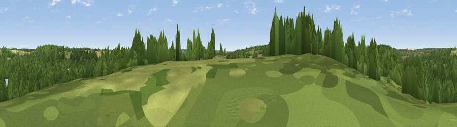

Viewpoint near Great Amwell
#44405 in England · top 52% of its area beats it · near Great AmwellWhere it is
The exact computed spot (TL 37225 12375). Click the marker for map links.
The view, rendered

A 360° render of this exact spot computed from the terrain model, tree cover and land cover — summer colours, afternoon light, calibrated against photographs of famous viewpoints. Real trees, hedges and buildings will differ in detail.
The panorama
Grey silhouette: terrain skyline in each direction (720 bearings, Earth curvature and refraction included). Dashed green: skyline with trees (+15 m) and buildings (+8 m) as obstacles. Blue strip: how far the ground is visible on each bearing.
Where the view opens
Wedge length = distance to the farthest visible ground on that bearing (vegetation-aware). Rings at 10, 25 and 50 km.
What fills the view
63% woodland · 16% grassland · 8% water · 7% built-up · 6% cropland
Angular shares of the visible panorama (visual magnitude), not map area. Landscape diversity 0.50 (0–1 Shannon).
Key numbers
More beautiful places nearby
The staircase of upgrades: each row has a higher view potential than everything closer. Driving times are estimates from straight-line distance, calibrated against real road routing — check an actual route before setting out.
| Place | Direction | Drive | Score |
|---|---|---|---|
| Viewpoint near Great Amwell | NE · 1 km | ~4 min | 20.0 |
| Viewpoint near Tonwell | NW · 4 km | ~10 min | 24.4 |
| Viewpoint near Thundridge | NW · 4 km | ~10 min | 27.7 |
| Viewpoint near Lower Nazeing | S · 8 km | ~16 min | 28.5 |
| Viewpoint near Sewardstonebury | S · 15 km | ~27 min | 32.4 |
| Viewpoint near Sewardstonebury | S · 17 km | ~30 min | 32.7 |
| Viewpoint near Wood Green | SSW · 24 km | ~39 min | 35.9 |
| Viewpoint near Baldock | NNW · 24 km | ~39 min | 53.7 |
51.79320, -0.01163 · source: screening · position refined by local search. Computed location — check access rights before visiting.